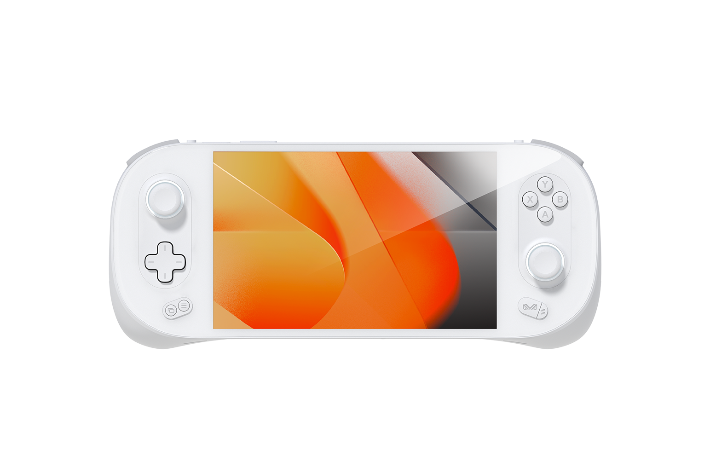
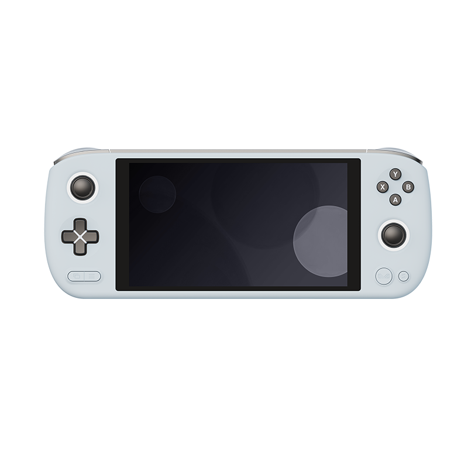

AYANEO 2

O Ayaneo 2 é o mais novo e emocionante console portátil no mercado, projetado para oferecer uma experiência de jogo inigualável onde quer que você esteja. Com uma poderosa combinação de desempenho e portabilidade, este console é a escolha definitiva para gamers de todas as idades.
Características Destacadas:
- Desempenho de Elite: Equipado com um processador de última geração e uma placa gráfica poderosa, o Ayaneo 2 oferece gráficos impressionantes e jogabilidade suave.
- Tela de Alta Resolução: Sua tela de alta definição proporciona cores vibrantes e detalhes nítidos para uma experiência visual envolvente.
- Portabilidade Suprema: Com um design ergonômico e peso leve, o Ayaneo 2 cabe facilmente no seu bolso, permitindo que você leve seus jogos para onde quiser.
- Biblioteca de Jogos Abundante: Explore uma ampla variedade de títulos, desde aventuras épicas até jogos desafiadores, através da loja de aplicativos Ayaneo.
- Conectividade Total: O Ayaneo 2 oferece Wi-Fi integrado e conectividade Bluetooth para jogos multiplayer e compartilhamento de conquistas.
- Bateria de Longa Duração: Não se preocupe com a carga - a bateria de longa duração permite que você jogue por horas antes de precisar recarregar.
- Personalização: Personalize seu Ayaneo 2 com capas de edição especial e temas exclusivos para torná-lo único.
AYANEO AIR

O Ayaneo Air é um console portátil compacto e elegante, perfeito para jogadores que desejam uma experiência de jogo imersiva em qualquer lugar. Sua tela brilhante e design ergonômico oferecem gráficos nítidos e uma jogabilidade suave. Ideal para jogadores casuais e entusiastas que desejam diversão rápida e prática.
Características Destacadas:
- Design Compacto e Elegante: O Ayaneo Air é leve e fácil de transportar, ideal para jogar em movimento.
- Tela Brilhante: A tela de alta resolução proporciona cores vibrantes e detalhes nítidos para uma experiência visual envolvente.
- Jogabilidade Suave: Com um processador eficiente, você desfrutará de jogos sem interrupções.
- Perfeito para Jogadores Casuais: Este console é projetado para jogadores que desejam diversão rápida e prática em qualquer lugar.
- Conectividade Simples: Com Wi-Fi integrado e conectividade Bluetooth, você pode se conectar com amigos para jogos multiplayer e compartilhar conquistas.
- Bateria de Longa Duração: A bateria de alta capacidade permite que você jogue por horas antes de precisar recarregar.